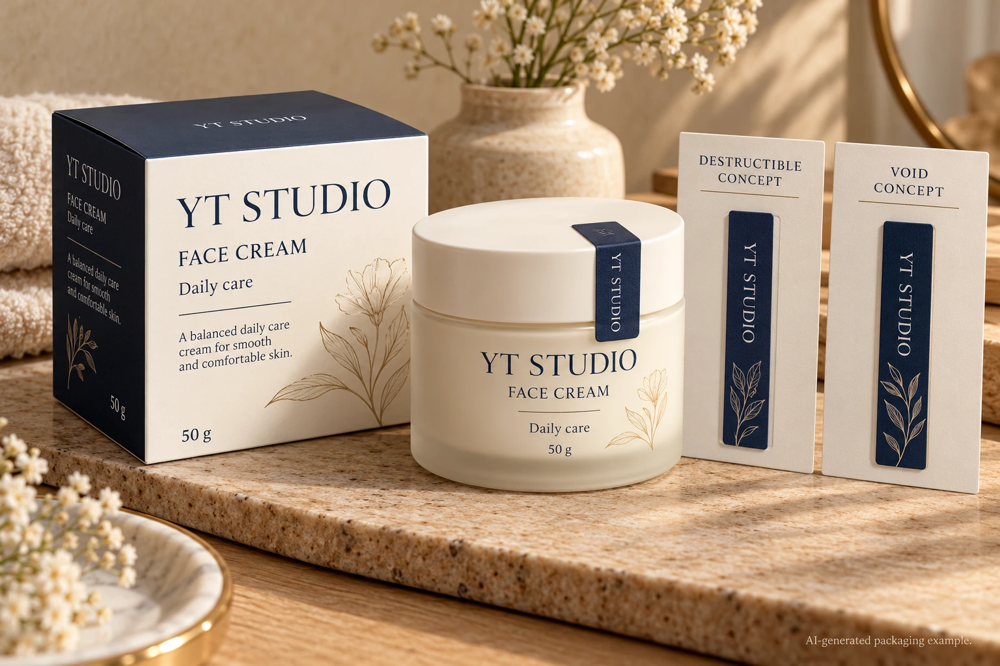
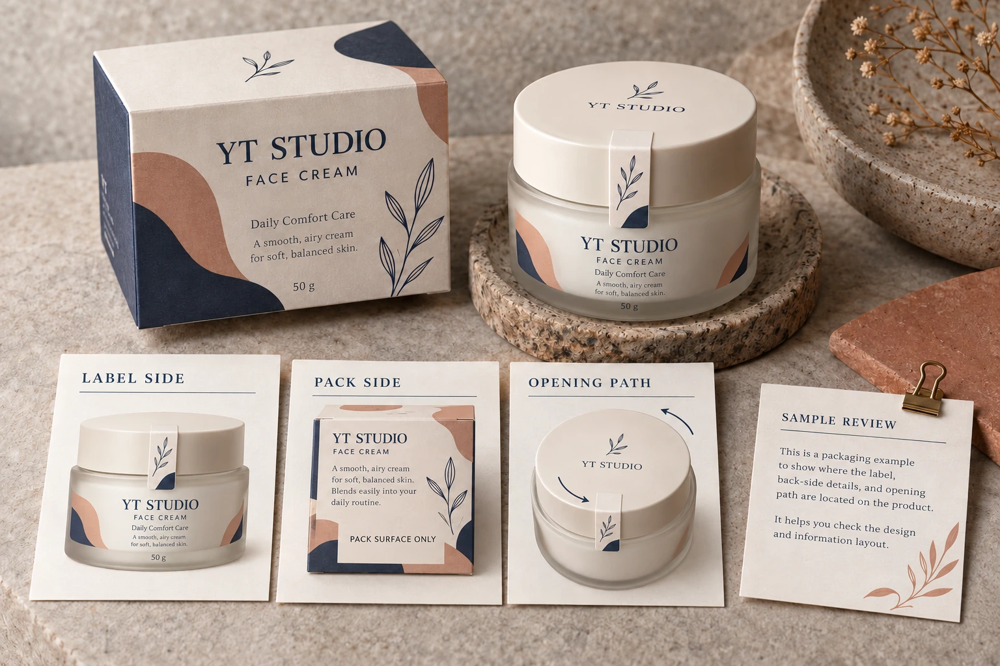

Choosing a cosmetic seal by its security name leaves a practical question open: what should a person see after an attempted removal? Define the expected evidence on the label and the pack, then compare the proposed destructible or VOID construction on the actual closure surfaces.
A destructible response and a message-transfer response are different proposals. Neither name alone establishes performance on your bottle, carton or finish. For procurement, the useful decision is which observable response serves the brand's stated inspection task and how that response will be evaluated.

Decide where the evidence must remain
Start with the opening path and the observer. Will the receiving person inspect the seal, the pack surface or both? Must the evidence remain visible after the loose piece is discarded? Is residue acceptable on the decorated pack? Have the responsible brand owner answer these questions before comparing sample colors.
iD Products' security-label overview distinguishes labels that fracture during removal from VOID-message constructions that reveal evidence when lifted. Its examples also connect surface and residue requirements to construction choice. These are useful technology distinctions, not independent evidence that either response will occur on your selected cosmetic pack.
Ask the proposing supplier exactly what its construction is intended to do. Does the message appear on the pack, the removed face or another identified layer? Which parts remain? Do not assume that all products described as VOID share one residue pattern.
If the underlying question is whether the closure needs holding, reclosure or evidence of opening, settle that earlier function through the closure-seal brief. Here the function has already been selected and the response itself needs a purchase agreement.
Use the real joint and decorated surfaces
A seal may bridge a cap and bottle, a carton opening or another specific joint. Identify every relevant surface on that path, including coatings, texture, curvature and decoration. Ask whether the proposed sample represents those surfaces and the intended placement.
Give the supplier the application stage and the required point of inspection. Let its technical party propose suitable preparation, sample timing and evaluation conditions. This guide sets no universal peel force or waiting period and does not ask procurement to improvise a tamper procedure.
Retain an unopened comparison sample where the agreed review calls for one. Keep sample identities and observations separate from conclusions. An intact-looking photograph cannot prove that a closure has never been accessed, and a visibly damaged label does not by itself identify how or when the change occurred.
Write a response specification before the comparison
Use this editorial response map to commission the evaluation. It is not a security certification or a standardized test.
| Question | Specify before sampling | Record after the agreed review |
|---|---|---|
| Access path | Joint and intended opening movement | Whether the sample represented that path |
| Visible evidence | Required message, fragmentation or other response | What actually appeared, and where |
| Inspection surface | Label, pack or both | What remains if the removed piece is absent |
| Pack condition | Actual material, finish and decoration | Any observed change requiring brand review |
| Handling boundary | Normal handling and opening conditions to evaluate | Accepted scope and unresolved cases |
| Disposition | Named brand and technical owners | Accepted proposal, revision or further evidence |
Begin with the intended inspection task. Obtain named construction proposals, agree a sample method with the technical parties and examine the relevant finished packs. Record each proposal against the same defined task. If the methods or represented surfaces differ, describe that limitation before calling one result better.
Do not release on the basis of a catalog photograph or an unsupported statement that stronger is safer. Ask whether the proposed response is recognizable for the people expected to use it. The right visual evidence is specific to the task, rather than the most dramatic-looking damaged label.

Give both alternatives a fair purchasing case
In a hypothetical program, the brand may want an obvious change in the seal itself and may not accept a readable adhesive message on the decorative bottle. A proposed destructible construction deserves review against that preference, including the actual residue and removal observations.
In another program, inspection may happen after a loose seal is gone. The brand may place more weight on a specified pack-side response. A suitable message-transfer proposal can be investigated, while still checking whether the selected finish supports that response and whether the appearance is acceptable.
These examples do not make either family inherently superior. If neither sample provides the agreed evidence, revise the construction, placement or inspection requirement. Do not relabel the outcome as acceptable merely to preserve an earlier artwork choice.
Keep opening evidence separate from authentication
A seal response is not a complete system for proving product authenticity, supply-chain history or absence of every possible interference. State the accepted claim narrowly. A decorative holographic appearance, an identifier and a fracture response address different questions even when combined on one label.
Likewise, an intended evidence-of-opening function is not approval of applicable cosmetic-packaging or product claims. The brand's responsible reviewer must approve the wording and any required consumer explanation. Avoid printing a broad protection promise that the actual sample review did not establish.
Hold the affected release when the evidence location is undefined, the sample surface is unrepresentative or normal-handling and intended-opening observations cannot be distinguished. Send the unresolved observation to the named technical owner instead of adding an untested second seal.
For a cosmetic seal quotation discussion, send the joint photographs, surface and finish references, dimensions, quantity per artwork and required evidence location. State residue preferences and the intended observer. The form prepares a message; files travel separately by email or WhatsApp. Ask which construction and sample scope can be proposed for the response you actually need.